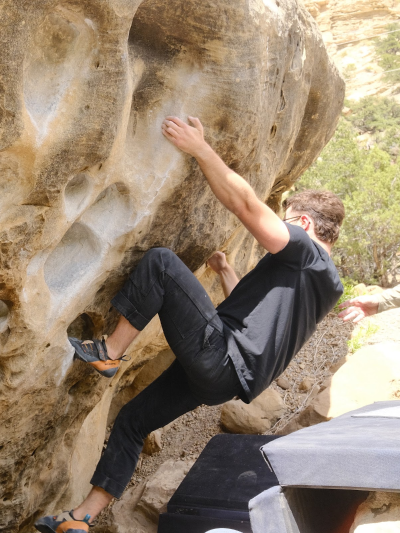
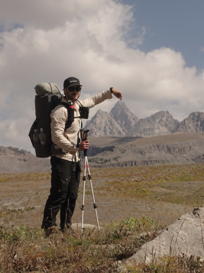
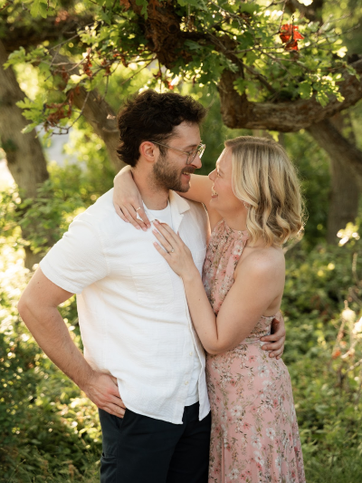

I’m a Senior Product Designer based in Salt Lake City, specializing in complex problem spaces and design systems that scale. My work tends to involve products where the data is dense, the users are experts, and the margin for confusion is low.



About
I’m a senior product designer with experience spanning cybersecurity, fintech, eCommerce, and political tech, across agencies, startups, and large enterprises. Every environment has been different, but each one required ramping quickly in a complex problem space and making dense, high-stakes products feel intuitive.
My work tends to involve products where the stakes are high and the users are experts. Small business owners managing margins and ad spend, or security analysts deciding which vulnerabilities to prioritize in an industry full of noise. I dig into the problem first: talking to users, and staying close to my PM and engineering counterparts throughout.
Although I consider myself a bit of a generalist, I keep getting pulled toward design systems, high-craft UI, and user research. Lately I’ve been experimenting with Claude Code — cleaning up UI and pushing my own MRs.
Based in Salt Lake City, I spend most of my free time outside: hiking, climbing, running, camping, snowboarding. When I slow down it’s usually to work on photo books, read, or add another piece to my growing collection of hand-thrown pottery.
Experience
Led design of a new 0 - 1 capability, expanding GreyMatter from incident response into asset visibility and exposure management, generating $1.5M in revenue within the first quarter of launch. Spearheaded a full redesign of reporting to enable custom dashboards and scheduled reporting, improving visibility for customers. Drove a platform-wide filtering overhaul through a design systems initiative, increasing consistency and scalability across the product. Collaborated closely with product and engineering teams to deliver high-impact solutions under tight timelines for executive-priority initiatives.
Embedded as a contract product designer at Meta, Square, and Vivint, rapidly onboarding to complex ecosystems and delivering high-impact product improvements within fixed engagement timelines. Led redesign initiatives across fintech, smart home, and advertising platforms, including launching revenue-driving mobile experiences that increased eCommerce traffic by 109%, enabling self-serve financial controls, and enhancing dashboard functionality. Outside of contract engagements, designed internal tools, venture-backed marketing sites, and facilitated accelerated design sprints.